长安一日
汉服写真 · 西安
汉服写真 · 西安
汉服写真 · 西安
长安一日
照片摄于二〇二六年八月二十九日，西安。
妆造与拍摄当日起于午后，止于深夜。
全书未使用生成式图像。版面配色取自照片中两位主角所着的汉服：靛蓝与藕紫。
壹
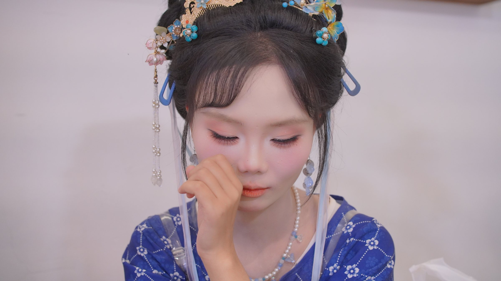
2026.08.29 14:41德福巷
2026.08.29 14:47德福巷
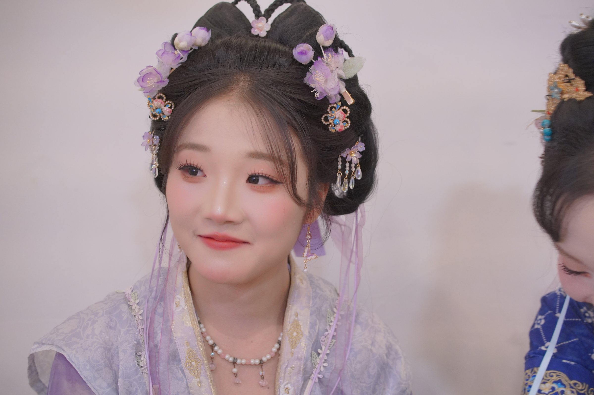
2026.08.29 14:47德福巷
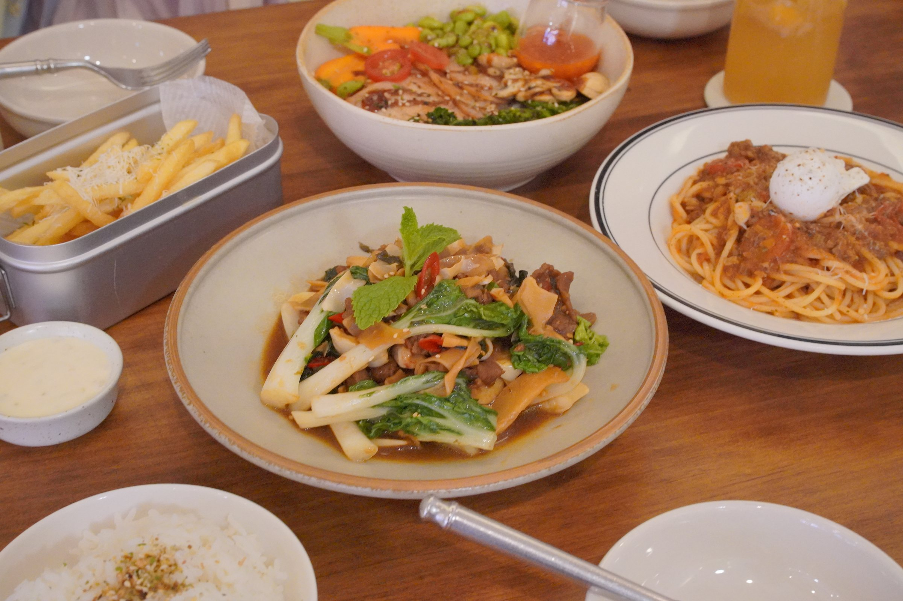
2026.08.29 14:50德福巷
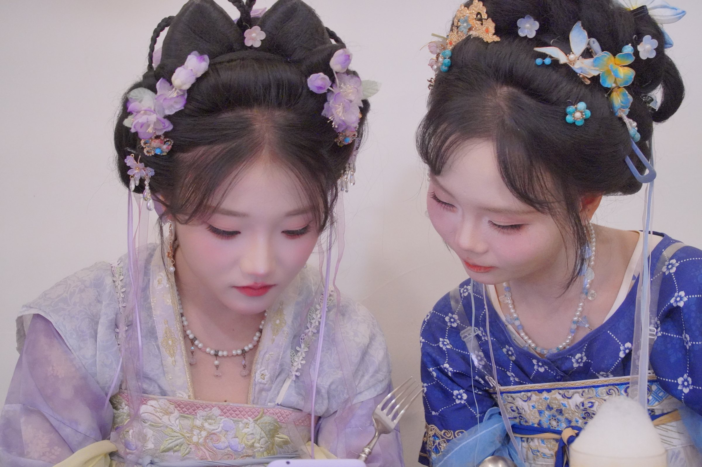
2026.08.29 14:54德福巷
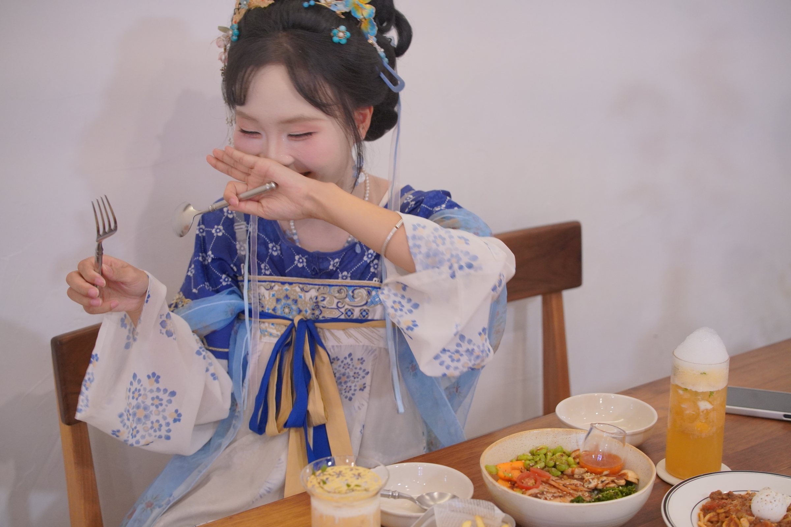
2026.08.29 14:57德福巷
2026.08.29 15:01德福巷
2026.08.29 15:30德福巷
贰
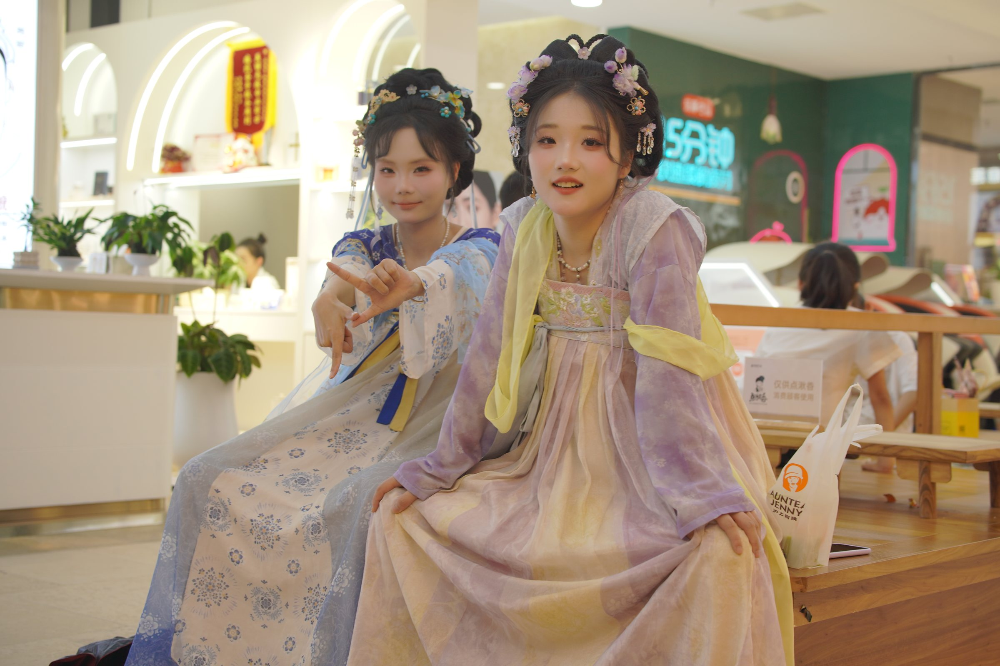
2026.08.29 16:31德福巷
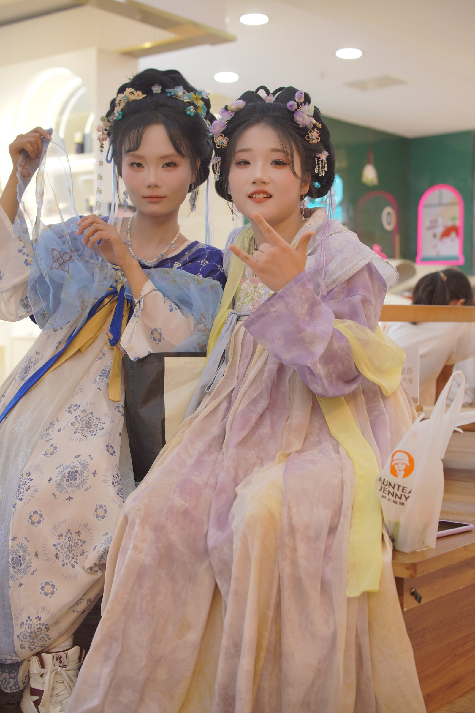
2026.08.29 16:32德福巷
2026.08.29 16:33德福巷
叁
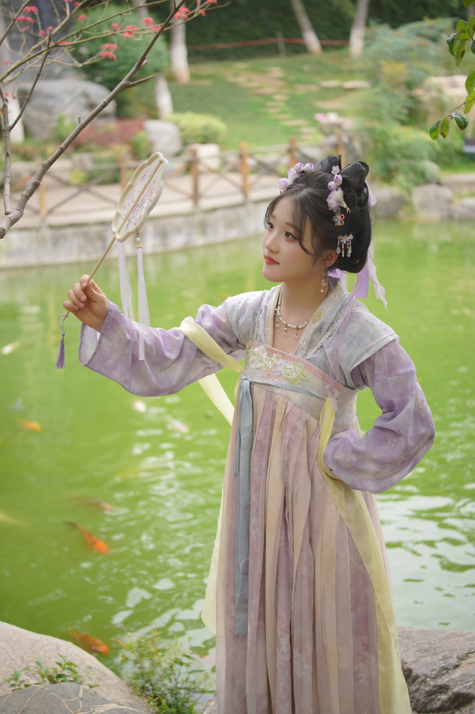
2026.08.29 18:00唐苑
2026.08.29 18:06唐苑
2026.08.29 18:07唐苑
2026.08.29 18:08唐苑
2026.08.29 18:20唐苑
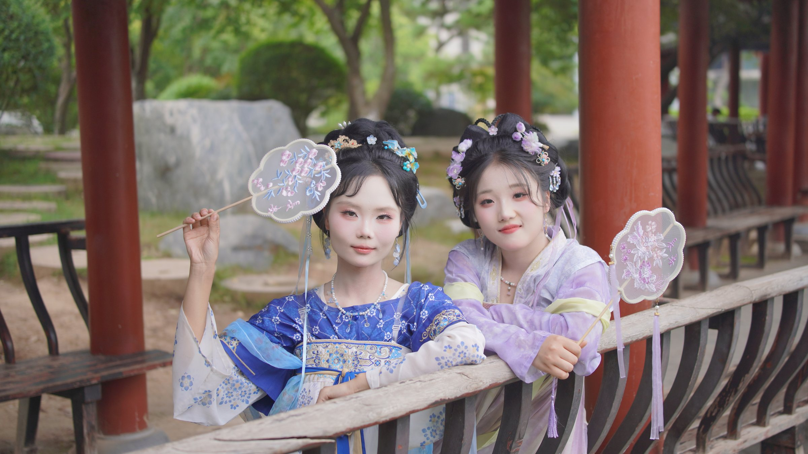
2026.08.29 18:28唐苑
2026.08.29 18:43唐苑
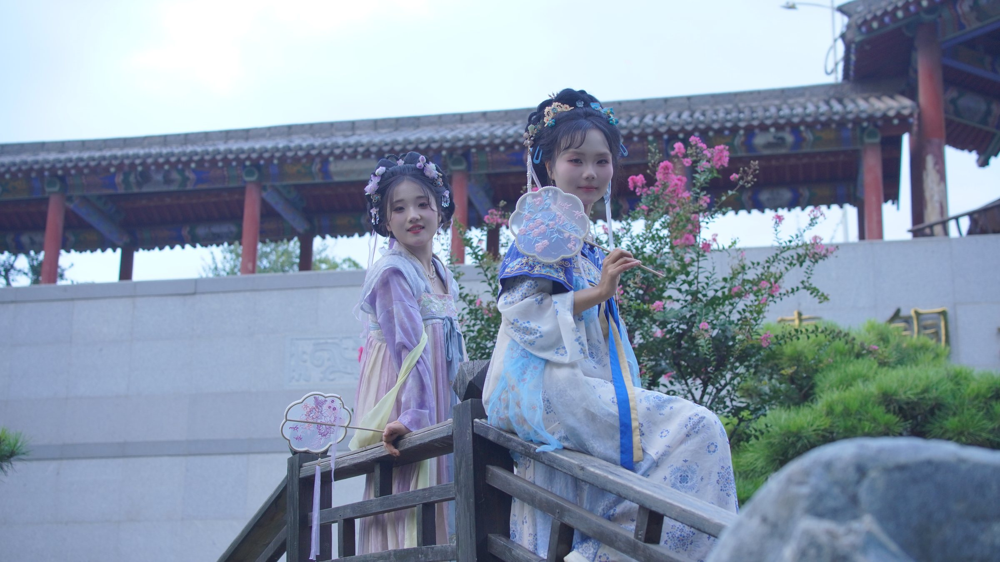
2026.08.29 18:57唐苑
2026.08.29 19:02唐苑
2026.08.29 19:03唐苑
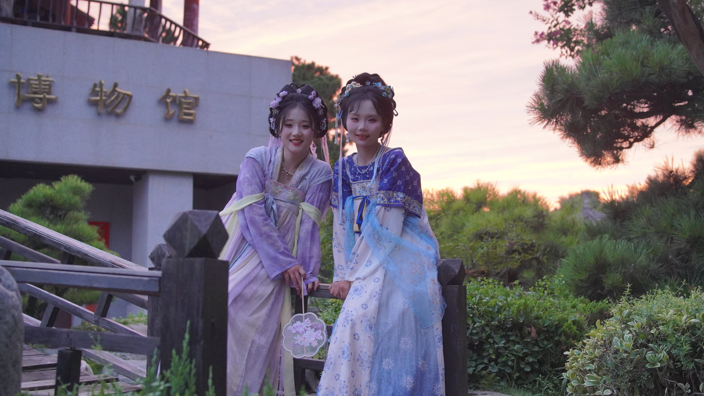
2026.08.29 19:19唐苑
肆
2026.08.29 20:18钟楼
2026.08.29 20:46钟楼
2026.08.29 20:57钟楼
2026.08.29 21:27钟楼
2026.08.29 21:29钟楼
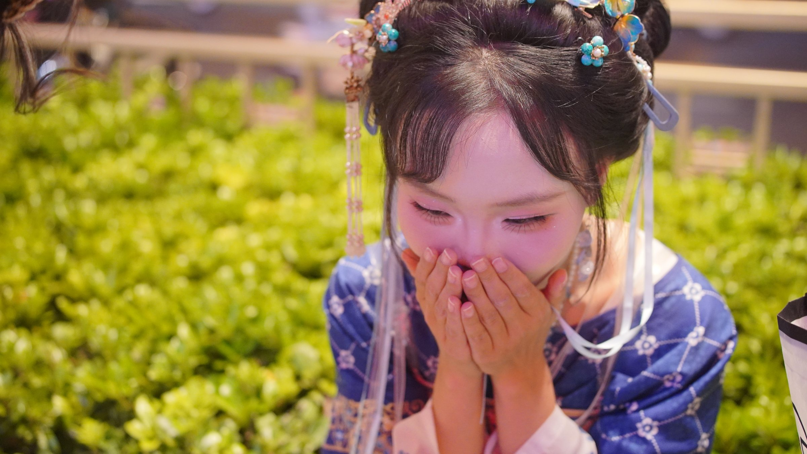
2026.08.29 21:57钟楼
2026.08.29 22:00钟楼
2026.08.29 22:03钟楼
2026.08.29 22:06钟楼
2026.08.29 22:07钟楼